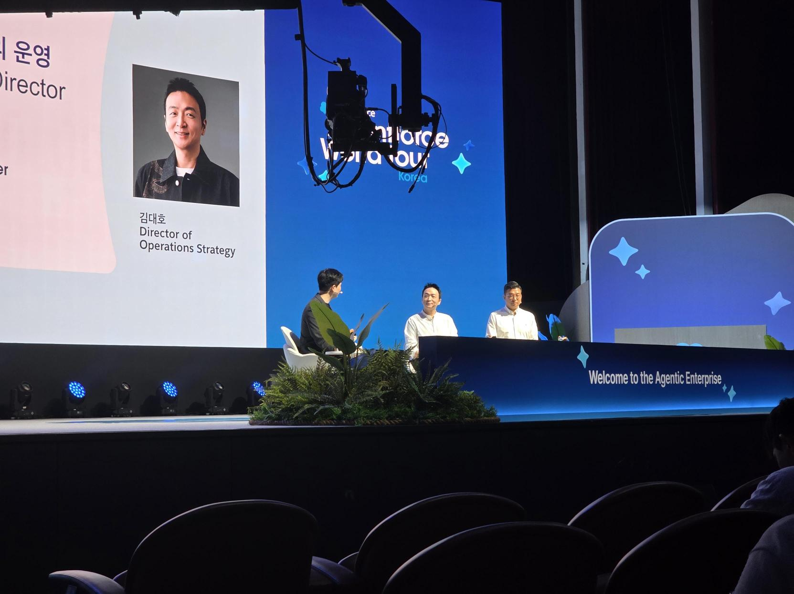

AI Native는
기술이 아니라 운영 전략

무신사는 One Core Multi Platform(OCMP)을 바탕으로 회원, 주문, 데이터, 고객관리 등 공통 기능을 표준화하고 각 플랫폼의 고유 경험을 확장하려 합니다. 세일즈포스는 이 구조에서 고객 케어를 성장 엔진으로 전환하는 기반입니다.고객 상담에서
Agentic Enterprise까지
발표는 AI 고객 서비스 시나리오에서 출발해 무신사의 글로벌 성장 전략, 플랫폼 구조, 구축 원칙, 실증 사례와 단계별 로드맵으로 이어졌습니다.
AI와 상담사가 한 팀으로 고객 경험을 만든다
교환 문의가 들어오면 AI가 구매 이력, 선호, 과거 상담과 재고를 파악해 먼저 응대합니다. 사람의 판단이 필요해지면 대화를 요약해 상담사에게 넘겨 고객이 같은 설명을 반복하지 않도록 합니다.
핵심: AI는 정보를 찾고 정리하고, 상담사는 맥락에 맞는 판단을 한다.고객 서비스 데이터는 비용 기록이 아니라 성장 신호다
특정 브랜드 문의가 급증하면 이를 시장 관심의 선행 신호로 해석해 MD 조직의 신규 브랜드 검토와 협업으로 연결할 수 있습니다. 고객 케어가 문의 처리 조직을 넘어 거래액을 만드는 비즈니스 엔진이 되는 구조입니다.
핵심: 고객의 질문 속에 다음 상품과 캠페인의 단서가 있다.글로벌 확장의 기반으로 OCMP를 선택했다
무신사, 29CM, 솔드아웃과 국가별 서비스를 각각 개발하면 중복 투자와 운영 복잡도가 커집니다. 회원, 주문, 상품, 배송, 데이터, 쿠폰 같은 공통 기능은 One Core로 표준화하고 브랜드별 경험은 Multi Platform으로 유연하게 유지합니다.
핵심: 공통 80%를 코어로 묶어 차별화 20%에 자원을 집중한다.세일즈포스는 CS 도구가 아니라 글로벌 운영 기반이다
국가별 고객 지원, 보안, 현지화와 확장성을 갖춘 검증된 표준이 필요했습니다. 무신사는 고객 케어 데이터를 추가 거래로 연결하고 전 세계 접점에서 일관된 경험을 제공하기 위한 플랫폼으로 세일즈포스를 검토했습니다.
핵심: 솔루션 선택 기준은 기능 수가 아니라 미래 운영 모델과의 적합성이다.현재 업무를 그대로 커스터마이징하지 않고 표준에 맞춘다
과도한 맞춤 개발은 단기 사용성은 높여도 유지보수 비용과 업그레이드 제약을 만듭니다. 검증된 Out-of-the-box 기능과 데이터 모델을 우선 활용하고, 절감한 개발 역량은 무신사만의 패션 데이터와 AI 경쟁력에 투입합니다.
핵심: 차별점이 아닌 영역에서는 표준을 받아들이는 것도 혁신이다.AI Native의 목표는 생산성을 성장으로 전환하는 것
업무를 먼저 표준화·자동화한 뒤 같은 인원으로 더 많은 일을 하고, 확보한 역량을 글로벌 확장과 신규 비즈니스에 사용합니다. 특정 모델이나 벤더에 고정되기보다 효율성, 유용성, ROI를 기준으로 자체 AI, 표준 솔루션, 외부 도구를 조합합니다.
핵심: AI 도입 여부가 아니라 비용·생산성·매출에 미친 영향을 측정한다.29CM 상담센터에서 빠르게 효과를 검증했다
내부 기술 조직과 AI 상담 에이전트를 개발해 고객 문의의 1차 응대를 맡겼고, 발표에서는 약 25% 수준의 개선 효과가 언급됐습니다. 정확한 지표명은 전사문상 불명확하지만 짧은 개발 기간에도 상담 효율에서 의미 있는 결과를 확인한 사례입니다.
AI 피드백과 지표 변화는 Slack으로 전달해 기획자와 개발자가 실시간으로 논의하고, 긴 회의와 결재를 줄였습니다.
핵심: 작은 실증과 빠른 협업이 다음 투자 판단의 근거가 된다.기반 통합 → 글로벌 성장 → 자율 실행으로 단계화한다
Phase 1은 고객 접점과 운영 프로세스를 표준화하고, Phase 2는 글로벌 고객 케어 데이터를 추가 거래와 GMV로 연결합니다. Phase 3에서는 고객 니즈를 예측하고 적절한 업무 흐름을 자동 가동하는 Agentic Enterprise로 진화합니다.
핵심: 안정적인 코어 없는 에이전트 확장은 지속되기 어렵다.One Core
공통 데이터와 비즈니스 로직을 하나의 기술 레이어로 정리해 중복 개발과 운영 비용을 줄입니다.
고객 케어의 수익화
상담 데이터에서 관심과 불편의 신호를 감지해 상품 제안과 신규 거래 기회로 연결합니다.
표준 기능 우선
과도한 커스터마이징을 피하고 검증된 표준에 내부 프로세스를 맞춰 속도와 지속 가능성을 얻습니다.
ROI로 성공 정의
구축 완료가 아니라 처리 속도, 생산성, 고객 경험, 추가 거래액, 확장 공수로 성과를 판단합니다.
벤더 유연성
특정 모델에 종속되지 않고 요구에 따라 여러 AI를 시험하고 교체할 수 있는 구조를 지향합니다.
단계적 진화
기반 통합, 글로벌 확장, 예측과 자동 실행이 가능한 Agentic Enterprise 순으로 발전합니다.
우리에게 필요한
One Core는 무엇인가
Employee 360
채용, 온보딩, 교육, 성과, 이동, 퇴직의 접점을 연결하되 민감정보별 접근권한과 목적 제한을 기본 설계로 둡니다.
공통 프로세스와 예외 분리
전사 공통 평가·채용 흐름은 표준화하고 직군별 역량과 인터뷰 경험은 유연하게 확장합니다.
Campaign Core
브리프, 타깃, 핵심 메시지, 콘텐츠, 미디어 접점, 반응, 성과를 하나의 캠페인 데이터 모델로 묶습니다.
클라이언트별 차별화
리포팅과 워크플로는 표준화하되 브랜드 보이스, 승인 규칙, 미디어 전략은 고객별 레이어로 유지합니다.
대화 데이터를 신호로
직원 문의와 고객·미디어 대화를 처리 기록이 아닌 니즈, 위험, 기회의 선행지표로 분석합니다.
공통 분류체계
업무 유형, 이슈, 대상, 감성, 결과, 책임자를 일관되게 기록해야 AI가 부서와 캠페인을 넘어 학습합니다.
먼저 코어를
정의하는 작업
HR/PR 핵심 객체 정의
사람·직무·역량·지원자 또는 고객·캠페인·메시지·미디어·이슈의 공통 데이터 모델을 그립니다.
표준과 차별화 구분
반복되는 80%는 표준화하고 경쟁력이 되는 20%에만 별도 개발과 창의 역량을 투입합니다.
성과지표 선합의
도입 전에 시간, 품질, 고객·직원 경험, 매출 기여 중 무엇을 개선할지 기준값을 측정합니다.